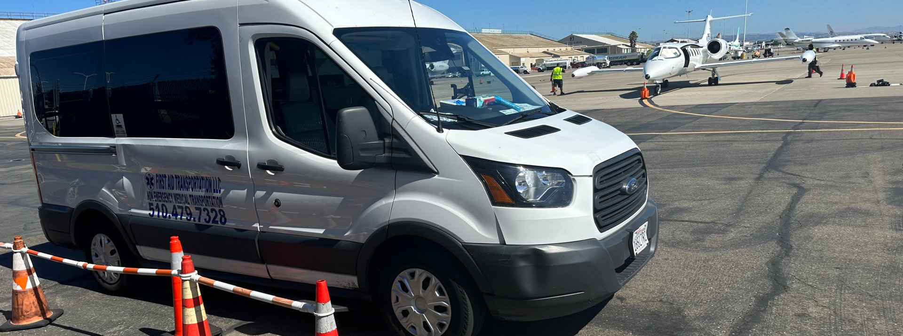
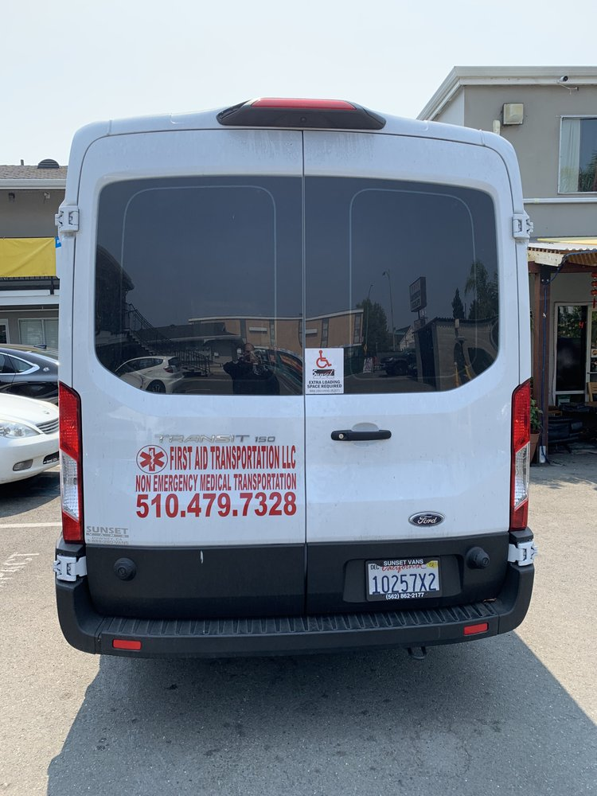
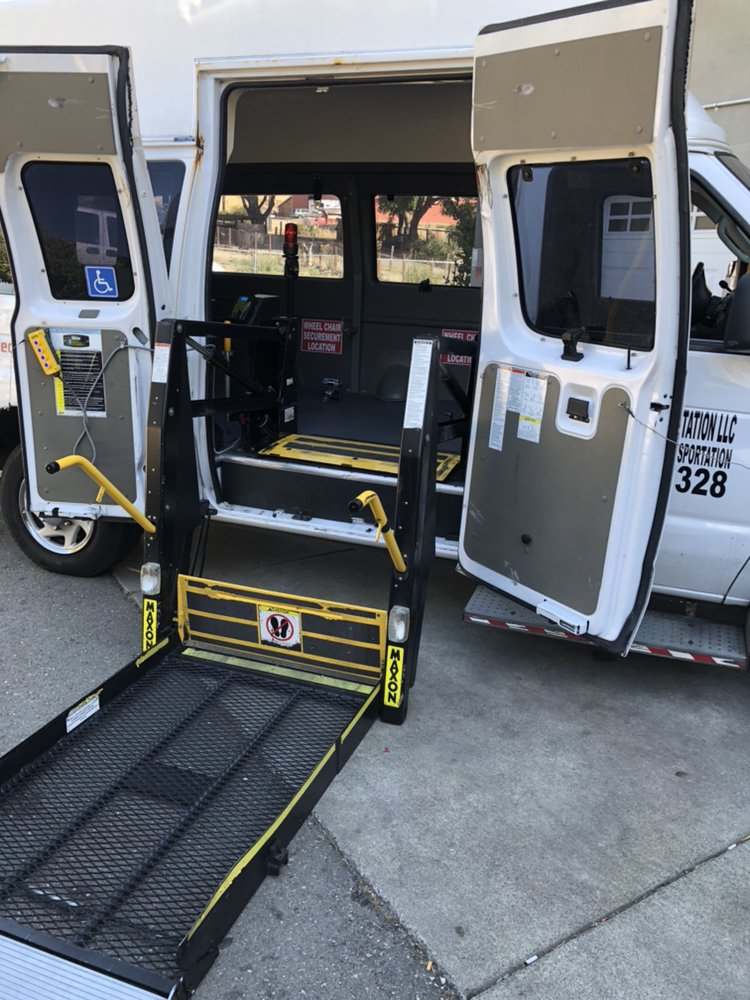
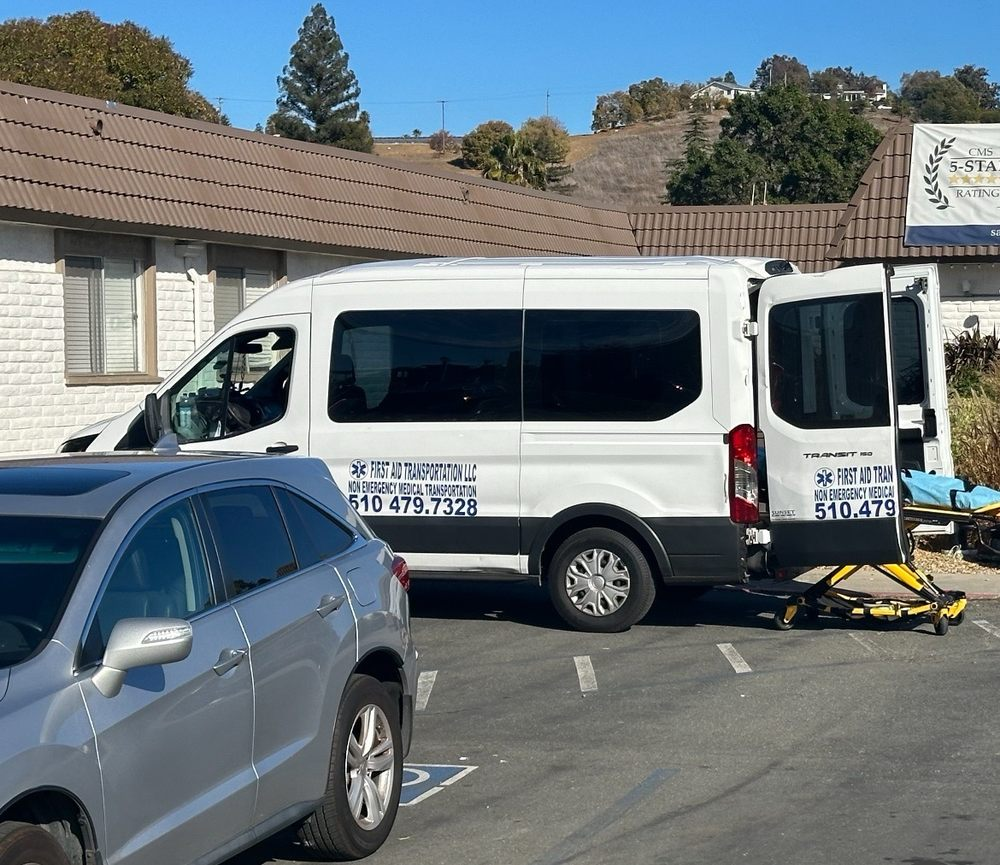
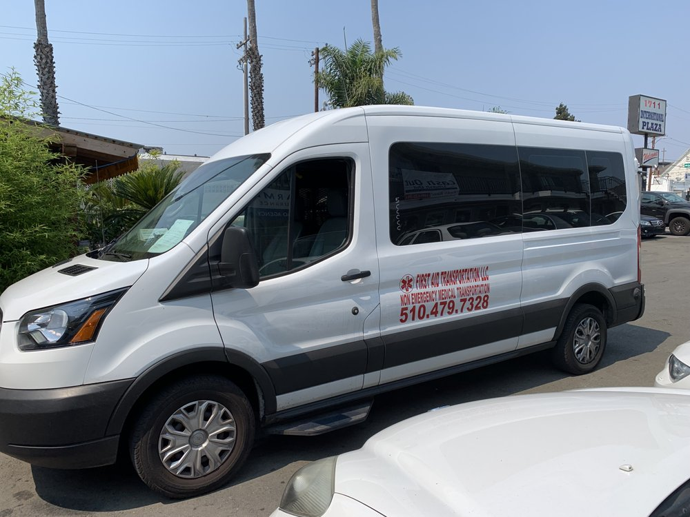

What We Offer
Personalized transportation solutions tailored to each patient's unique needs.
Safe, accessible transport with certified wheelchair securement for every ride.
Standard and bariatric gurney transport for patients who cannot sit upright.
Comfortable rides for patients who can walk with minimal assistance.
Full door-to-door assistance with stair help and oxygen tank vehicles available.
About Us
Serving the Bay Area for over seven years with safe, efficient, and compassionate NEMT services. We require 48-hour advance notice — urgent requests available.
Coverage
Serving patients across five Bay Area counties.




What People Are Saying
See what our patients and their families say about First Aid Transportation LLC.
"My driver Hamid is an excellent safe driver and I really appreciate their services. I definitely recommend using First Aid Transportation to all who need rides to their appointments."
"I highly recommend this service. They actually care about the people they are transporting. They go above and beyond to make sure the patients are comfortable."
"We use First Aid Transportation via our Medical Insurance. Our relative needs transportation to dialysis four times per week. Thank God we found First Aid Transportation."